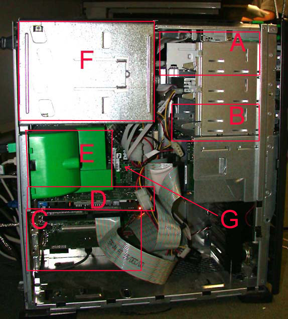
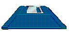
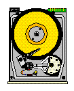
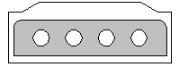
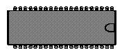
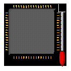

Inside the Case
Inside the Case
The picture above is shows what it looks like inside Videolab's case. As you can tell, there are a lot of different things inside. At first it may look a little cluttered but most of what you see are cables and wires that connect things together. For the rest of this tour, I will tell you what each of the pieces marked in the image above are and what they do.

A: Look carefully at the box labeled "A". Behind that metal piece in the front is a long grey box. This box is the CD-ROM drive. You are probably already familar with CD-Rom drives. An opening on the front of the case allows a person to put a CD into the CD-Rom drive so that the computer can read the information stored on the CD.
Some computers also have a floppy drive. A floppy drive looks similar to a CD-Rom drive except that the opening on the front only accepts floppy disks, like the one shown in the graphic above.

B: You can see VideoLab's harddrive in the box labeled "B". Again, you need to look behind the metal piece in the front. The harddrive is a very important part of the computer. It stores all of your programs and files. Everytime you "save" a file or "install" a program, you tell the computer to store some information on the harddrive. So, the next time you need this information, the rest of the computer can get it from the harddrive.
The graphic above depicts the inside of a harddrive. The bright yellow circle is the part of the harddrive where information is stored and the pointy piece that is shown over the circle both reads from this circular area and writes to the circular area.

C: The area labeled "C" shows the place in the case where special computer cards can be inserted. These special cards include modems, like the one shown in the graphic above, that allow you to connect to the internet through your phone line, ethernet cards that allow you to connect to the internet using cable or ethernet phone connections, and 3D video cards, which allow your computer to make really neat 3D graphics that can be displayed on your monitor when you are playing video games.
Each card can be slid easily into a slot inside the case. This makes it very easy for people to add special abilities to their computers without help from professionals.

D: Like the special cards I described above, Random Access Memory, or RAM, also slides easily into a slot in a computer. Look closely at the box marked with "D". Do you see the blue spot on the left? It is a little lever. By pressing on this blue lever, the RAM will slide out of its slot.
RAM is very similar to the harddrive except that there is not much room for information to be stored. But the really wonderful thing about RAM is that the rest of the computer can get information from RAM very quickly. For this reason, the harddrive and RAM work together a lot. For example, when you save a file, it gets put on the harddrive. Then, when you open the file the next day, the computer gets the file from the harddrive and puts it temporarily in RAM. Now, as you work with your file, the computer is able to read and write to the file very quickly. You can't even tell that the computer is constantly changing the file in RAM while you edit it. Later, when you save the file, the computer moves the file back to the harddrive. This is why you have to wait a few seconds when you ask the computer to save something.

E: In the box marked "E", behind the big, green, plastic piece is the Central Processing Unit, or CPU. Sometimes the CPU is simply called the processor. The big, green plastic piece that is covering the processor is a fan. It is very important that the processor have a fan blowing on it because it can get very hot. This is because the processor is the brain of the computer. While it is very small, it does most of the actual work. You can see a graphic of a processor above. The white bar with the red tip on the right side of the graphic is another lever that allows you to take the processor out of the computer.
The processor is not a very big piece of the computer yet it can do so much. Whenever you ask the computer to add to numbers, the processor does the addition. Whenever you ask the computer to spellcheck your file, the processor does the work. Whenever you ask the computer to play a song, the processor figures out how and does it. Everything has to go through the processor.
F: Anything electronic needs power, either from a battery or from an electric plug. The metal box shown in the area marked "F" is called the Power Supply. The Power Supply is the part of the computer that plugs into the wall. The electricity that comes from the wall is then distributed to the different pieces of the computer by the Power Supply.
G: The last computer part that I will point out for you runs along the whole back side of VideoLab's case. This piece is called the Motherboard. If you follow the arrow coming from the "G" in the image, you can see a part of the motherboard. The motherboard has a very important job to do. In order to have a computer work, all of the different pieces must be able to work together. They need to be able to pass information around easily. The motherboard is connected to everything in the computer. It works sort of like a road system. Information can travel through the motherboard just like cars travel down roads. Information can easily get from the harddrive to the RAM to the processor all with the help of the motherboard.
Well, that is all for your tour of VideoLab. I hope you have enjoyed this tour and that you now understand a little more about how a computer works. I also hope that this tour will encourage you to learn more about these amazing machines.